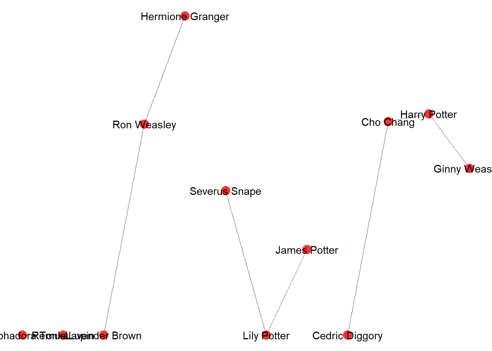

library(igraph)
library(ADAPTSNA)
library(ggraph)
library(threejs)9 Networks
Network data can be stored as edgelists or adjacency matrices. We will go through one then the other. Finally, we will work on some basic visualisations using a package called ggraph.
9.1 Edgelists
Your data may be stored as an edgelist. An edgelist is what it says, a list of edges or relationships that exist between the nodes in your network. Since these are edges between nodes, the data are stored in a dyadic format (pairs).
Split across two columns you have the names of everyone in the network that share a connection. The basic format for any edgelist is to have a ‘from’ and a ‘to’ column. The titles of the columns are arbitrary, but are helpful for you as the researcher, especially if the connection is directed. You may wish to call the columns ‘sender’ and ‘receiver.’
This code chunk shows how to read in a .csv that is formatted as an edgelist. Note, the header = TRUE option tells R that the first row are headers (column names). Using the head() command, we see the first lines of these network data.
This is a network of romantic affiliations based on students from the Harry Potter saga. Note the column names reflect this.
my_edge <- load_data("Hogwarts Crushes Edgelist.csv", header = TRUE)
head(my_edge) Crusher Crush
1 Harry Potter Ginny Weasley
2 Harry Potter Cho Chang
3 Ron Weasley Hermione Granger
4 Hermione Granger Ron Weasley
5 Ron Weasley Lavender Brown
6 Ginny Weasley Harry PotterThis network is directed. These are individuals who have romantic feeling for others in the storyline of Harry Potter. Romantic ties, may not be reciprocated (poor Snape!). As you look through this network, you can see the ties that exist. Take a look at the first six rows above, Harry ‘sends’ to Ginny, he also sends to Cho. You could look through the whole dataset and identify where the ties exist and who sends to whom!
9.2 Adjacency Matrices
Your data may be stored as an adjacency matrix. An adjacency matrix is a datasheet that uses a numerical system (usually a binary system 0 and 1 for unweighted networks) to denote the ties that exist between cells in the spreadsheet. 0 indicates no tie and 1 indicates a tie. In a weigted network, the number may be higher than 1 (i.e. to indicate the number of interactions, the distance, or other weight).
The most important element of an adjacency matrix is that the first row and the first column have the list of nodes. Each cell is an individual node and this node is mirrored on the other side of the matrix. For example, cell A2 is the same as B1. These two lines (the first row and column) must have the same names in them in order for R to recognise it as a network. In other words, an adjacency matrix has all the possible dyads (pairs) in the network with 1s and 0s to indicate whether they share a tie. Note that A1 should always be left empty.
One final characteristic of an adjacency matrix is the line where the same cell overlaps. This is called the diagonal. Cell A2 and B1 are the same name, the coordinates whether those cells meet (B2) can indicate whether that node is connected to itself. The same is true all the way down the diagonal of the matrix. The researcher (YOU) must decide whether self loops/ties make sense given the characteristics/parameters of the network when you collect network data. For example, in a network of sending text messages, it may not make sense.
This code chunk shows you how to bring in a .csv with network data stored as an adjacency matrix. These data are the same data as before - crushes between Harry Potter Characters. Note, the row.names = 1 option is used here to ensure R recognises row 1 as names not connections.
my_adj <- load_data("Hogwarts Crushes matrix.csv", row.names=1)
head(my_adj) Harry.Potter Ron.Weasley Hermione.Granger Ginny.Weasley
Harry Potter 0 0 0 1
Ron Weasley 0 0 1 0
Hermione Granger 0 1 0 0
Ginny Weasley 1 0 0 0
Lily Potter 0 0 0 0
James Potter 0 0 0 0
Lily.Potter James.Potter Severus.Snape Nymphadora.Tonks
Harry Potter 0 0 0 0
Ron Weasley 0 0 0 0
Hermione Granger 0 0 0 0
Ginny Weasley 0 0 0 0
Lily Potter 0 1 0 0
James Potter 1 0 0 0
Remus.Lupin Lavender.Brown Cho.Chang Cedric.Diggory
Harry Potter 0 0 1 0
Ron Weasley 0 1 0 0
Hermione Granger 0 0 0 0
Ginny Weasley 0 0 0 0
Lily Potter 0 0 0 0
James Potter 0 0 0 09.3 Making Network Objects
Now we know how network data are stored, there are a couple of steps we need to take before we can get analysing our networks. In short, we need to convert our edgelist or adjacency matrix into a network using some functions that the igraph package provides. Let’s start with edgelists and then move on to adjacency matrices.
Our edgelist is very simple to convert into a network. First, we will need to tell R that the commands we are running from here on are igraph. So in this next chunk we will use the library() command to let R know.
In the next line, we use the graph_from_data_frame() function from igraph to create an object called g1 which is our first network.
For an adjacency matrix, things are slightly different. At the moment, our object ‘my_adj’ looks like a matrix, it has the 1s and 0s, but R recognises it as a table. We need to create an object that R recognises is a matrix. In short, R needs to recognise the 1s as ties and the 0s as the lack of ties.
So, you will notice in the chunk below there are two steps instead of just one. The first, we use the as.matrix() function to create a new object called ‘mat’ (call these whatever you want) that now has the same information as ‘my_adj’ but now stored as a matrix. Next, we use the graph_from_adjaency_matrix() function to convert this matrix into what R recognises as a network and create g2.
# Edgelists
g1 <- graph_from_data_frame(my_edge, directed = TRUE)
# Adjacency Matrices
mat <- as.matrix(my_adj) #Creates an object R recognises as a matrix not a table.
g2 <- graph_from_adjacency_matrix(mat, mode = 'directed', diag = FALSE)Great, now we have our network objects! Let’s understand what these networks look like. They will look exactly the same because they represent the same ties. So, let’s look at g1 and understand how igraph stores networks. To view it, we simply name the object. I want to draw your attention to a few places. It lists it as an igraph object, a network. The DN means directed network. Then it lists 12 and 15. These are how many nodes and how many edges there are in the network. The second line lists all the attributes R can recognise from the network we pulled in (there are all kinds of information we could have about the people and their relationships). In this case, we have their names and that is it. Then it lists the edges that exist between the individuals in this network. Notice that the link between them looks like an arrow ->? If this was an undirected network, the link would look like this –.
g1IGRAPH 811c820 DN-- 12 15 --
+ attr: name (v/c)
+ edges from 811c820 (vertex names):
[1] Harry Potter ->Ginny Weasley Harry Potter ->Cho Chang
[3] Ron Weasley ->Hermione Granger Hermione Granger->Ron Weasley
[5] Ron Weasley ->Lavender Brown Ginny Weasley ->Harry Potter
[7] Lily Potter ->James Potter James Potter ->Lily Potter
[9] Severus Snape ->Lily Potter Nymphadora Tonks->Remus Lupin
[11] Remus Lupin ->Nymphadora Tonks Lavender Brown ->Ron Weasley
[13] Cho Chang ->Cedric Diggory Cho Chang ->Harry Potter
[15] Cedric Diggory ->Cho Chang ggraph(g1) +
geom_edge_link(color = "darkgrey") +
geom_node_point(color = "firebrick1", size = 4) +
geom_node_text(aes(label = name)) +
theme_void() 
9.4 Interactive network Visualisation
You might want to use interactive
g1_3d <- graphjs(g1)
g1_3dThere are a few things you can do to make this visual a little bit more useful.
g1 <- set_vertex_attr(g1, "color", value = ifelse(betweenness(g1) > 1, "red", "ivory"))
V(g1)$size <- 3
g1_3d <- graphjs(g1, main= "Harry Potter Romantic Network Red Nodes = Betweenness >1", bg = "black")
g1_3d9.5 Activity
Create your own network and bring the data in using read.csv(file.choose()). Convert it into a network object and then visualise it.